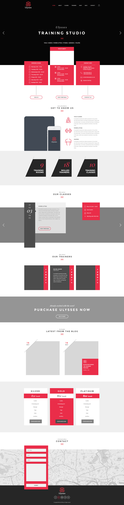
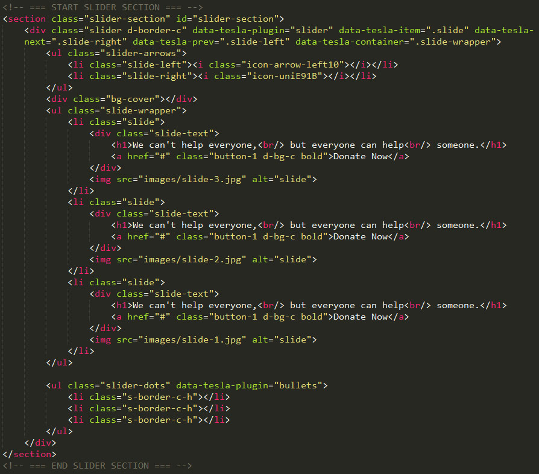
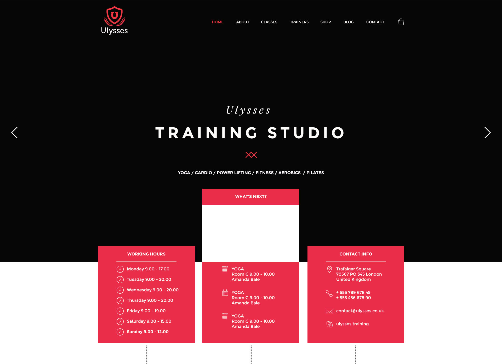
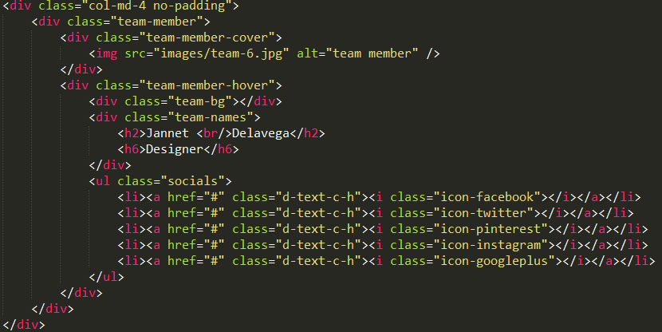
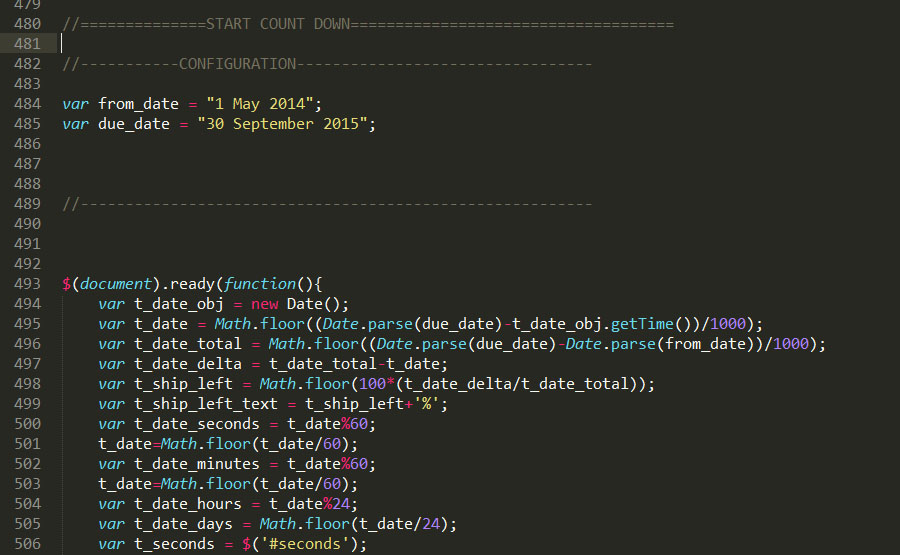

- Ulysses HTML Theme Documentation for version 1.0 by GeoThemes
This program is free software: you can redistribute it and/or modify it under the terms of the GNU General Public License as published by the Free Software Foundation, either version 3 of the License, or (at your option) any later version.
This program is distributed in the hope that it will be useful, but WITHOUT ANY WARRANTY; without even the implied warranty of MERCHANTABILITY or FITNESS FOR A PARTICULAR PURPOSE. See the GNU General Public License for more details.
You should have received a copy of the GNU General Public License along with this program. If not, see http://www.gnu.org/licenses/.
Thank you for purchasing our product! We are very glad that you have decided on our HTML theme.
The theme is very easy to use and we are here to guide and help you, so please read and follow the instructions and if you have further questions write us a email assistwordpress@gmail.com. This documentation is more of a reference work if you do not know what to do and need a better understanding on how the template is built write us a email.
Ulysses is a theme for all your needs and it has a lot of features, like stiky menu, (wow.js) animations, countdowns and more.
It has 3 pages:
A screen of the Home Page:
All the themes elements like the Testimonial, event, services, skills etc. are all separated DIV-s that can be used on any page you want.
The themes includes javascripts files:
The site is made of many sections like header, content, slider, testimonials, our partners and more...
As example we have the slider section, the code below:
And this is how it look live:
And a our-team section, if you want to add more members just copy the code from the "col-md div" the code below:
The same thing is with all sections, testimonials, partners, blogs, they are all in a section or a div="SECTION-TYPE".
Modify your email here to recive emails from contact form:

To set the time for the countdown you have to open, option.js and in the bottom you will find the configuration of FROM_DATE and DUE_DATE as you see bellow:
This theme has been implemented as a responsive layout. The full width of the template is fluid for screen mode, and it still has a boxed version.
The CSS file is located in the css folder. The css file is registered and included in the "head"..."/head".
CSS file is very good structured and arranged so you can search very easy:
/* =========================== START HEADER SECTION ===================== */
.header .container {
position: fixed;
z-index: 5;
padding: 35px 0 0;
margin: 0 auto;
left: 0;
right: 0;
top: 0;
}
.single-page .header .container {
position: relative;
padding: 20px 0;
}
.single-page .header .menu ul {
padding-top: 10px;
}
.single-page .header .menu ul li:first-child {
padding-bottom: 10px;
}
.single-page .header .menu i,
.single-page .header .logo a {
color: #fff;
}
.single-page .header .menu i {
margin-top: 6px;
}
.header-transform {
position: fixed;
width: 100%;
top: 0;
background: rgba(0,0,0,0.6);
z-index: 333;
left: 0;
height: 70px;
right: 0;
}
.header-transform .container {
padding-top: 15px;
}
.header-transform .menu {
margin-top: 10px;
}
.logo {
display: inline-block;
}
.logo a {
display: block;
font-size: 40px;
font-weight: 700;
line-height: 1em;
color: #fff;
}
.logo a span {
letter-spacing: -10px;
position: relative;
z-index: 2;
}
.menu {
float: right;
}
.header-transform .responsive-menu {
margin: 0;
}
.responsive-menu {
display: none;
}
.menu>ul {
display: block;
}
.menu ul li {
display: inline-block;
*zoom: 1;
*display: inline;
margin: 0 0 0 40px;
}
.menu ul li.no-icon-item a:after,
.menu ul li.no-icon-item a:before {
content: "" !important;
display: none;
}
.menu ul li a {
display: block;
position: relative;
color: #fff;
text-transform: uppercase;
font-weight: 700;
font-size: 13px;
}
.menu ul li a::first-letter {
color: red;
}
/* =========================== END HEADER SECTION ===================== */
I've used the following images, icons, fonts or other files as listed.
Fonts used:
Thank you so much for choosing "Ulysses" we hope you will enjoy using it!